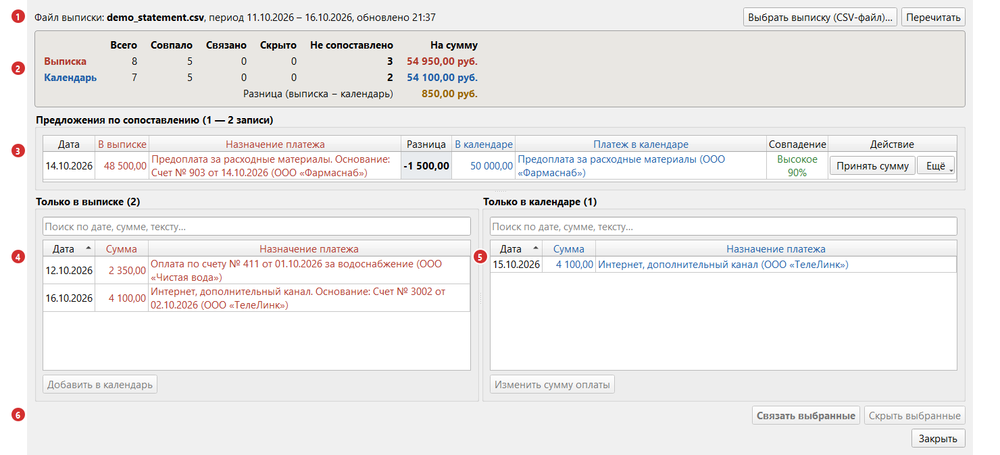
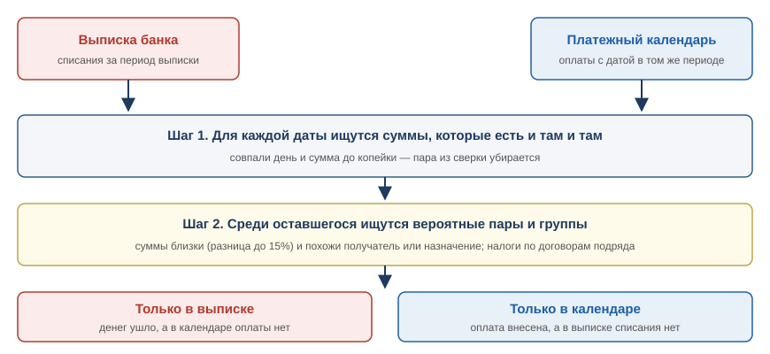
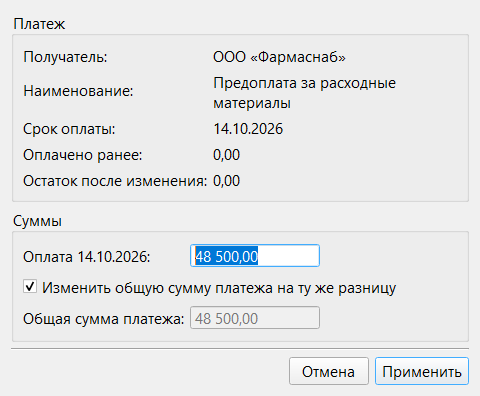
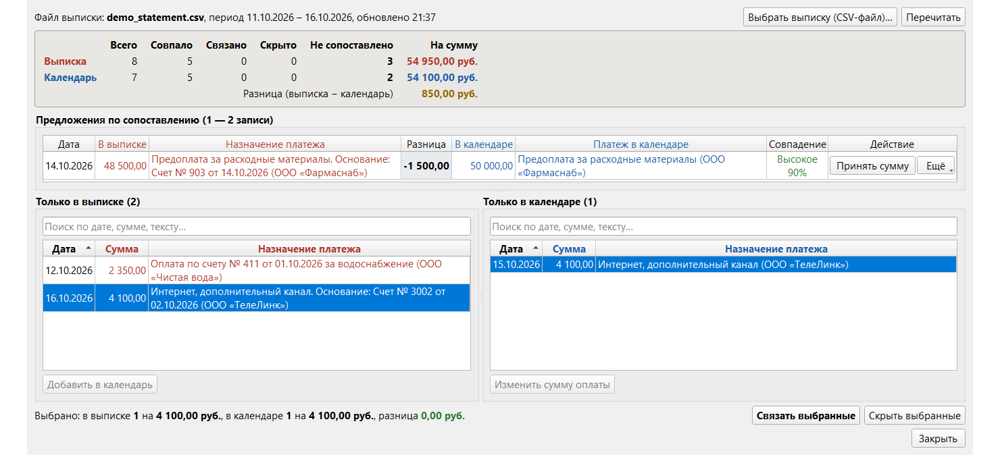
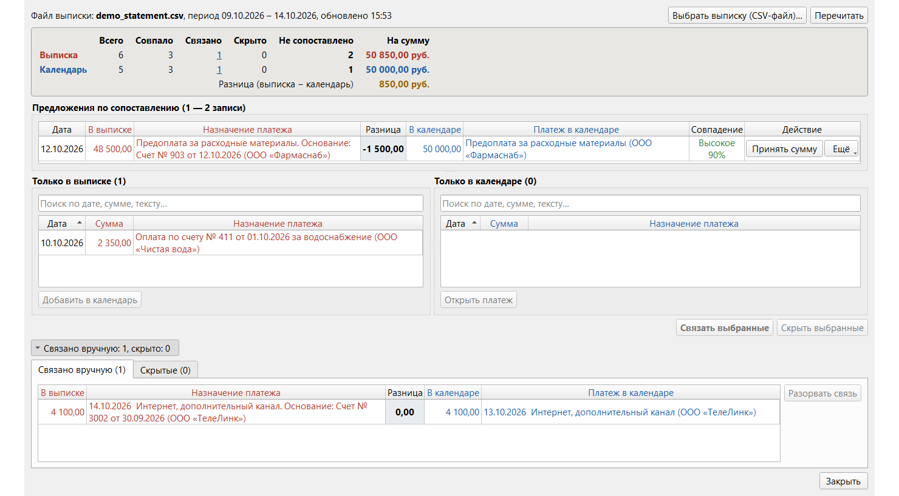

Раздел 9. Сверка банковской выписки |
Календарь показывает, что вы внесли как оплаченное, банковская выписка — что реально списано со счёта. Сверка сравнивает одно с другим и находит расхождения: забытую оплату, ошибку в сумме, платеж, который внесён, но в банк не уходил.
Как открыть |
Кнопка «Сверка» → «Выбрать выписку (CSV-файл)…» или перетащите файл в окно. «Перечитать» заново читает тот же файл и оплаты календаря.

Рис. 26. Окно «Сверка выписки». 1 — файл и период; 2 — сводка; 3 — предложения программы; 4 — записи только в выписке; 5 — записи только в календаре; 6 — выбранные записи и кнопки действий.
Какую выписку загружать |
Нужна выписка по расчётному счёту в формате CSV. Программа настроена на формат вашего банка; она читает период выписки (из шапки файла: «С … ПО …») и все списания (дату, сумму, назначение и получателя).
Поступления при сверке не учитываются; исключение — комиссии банка, которые банк удерживает из поступлений (раздел 10).
Если банк поменял формат файла, программа может прочитать его неверно: номера строк и столбцов задаются в «Настройки» → «Парсер выписки» (раздел 13).
|
⚠️ Внимание. Сравниваются только оплаты за период выписки. Оплаты, внесённые на даты вне этого периода, в сверку не попадают. Поэтому чтобы выписка за 5 октября совпала с календарём, оплаты должны быть внесены с датой 5 октября (дата оплаты, а не срок оплаты платежа). |
Как программа сопоставляет выписку с календарём |
В календаре программа берёт оплаты за период выписки (раздел 4), в выписке — списания и сопоставляет их по каждой дате отдельно в два шага.

Рис. 27. Сверка в два шага. Что нашлось на обоих шагах, считается сверенным. Остаток попадает в списки «Только в выписке» и «Только в календаре».
Шаг 1. Совпадение по сумме. Для каждой даты программа ищет в календаре оплату с точно такой же суммой (до копейки). Нашлась — пара считается сверенной и в списки не попадает. Получатель на этом шаге не проверяется: важны дата и сумма; если подходящих оплат несколько, берётся та, у которой название получателя больше похоже. Каждая оплата участвует в одной паре: две одинаковые суммы в выписке требуют двух оплат в календаре.
Шаг 2. Вероятные пары и группы. Из оставшегося программа собирает пары, где суммы почти равны, и группы (платежи, разбитые на несколько оплат, и налоги по договорам подряда). Что не нашло пары, остаётся в списках «Только в выписке» и «Только в календаре».
Две записи (из выписки и из календаря на одну дату) считаются вероятной парой, если:
Программа показывает уровень совпадения: «Высокое» (от 75%), «Среднее» (от 50%) или «Низкое» (от 35%). Пары ниже 35% не предлагаются.
|
💡 Совет. Вероятная пара — это подсказка, а не вывод программы. Сначала сравните строки глазами, особенно если уровень невысокий. |
Пары ищутся только внутри одной даты. Если оплата внесена другим днём, она остаётся в списках, а связать её с записью выписки можно вручную (см. «Связать вручную»).
Некоторые операции в выписке программа объединяет перед сверкой, потому что в календаре их обычно ведут одной суммой за день:
| В выписке | Как показывается в сверке | Что нужно в календаре |
|---|---|---|
| Выплаты работникам: в назначении есть паттерн группы (по умолчанию «заработн», «зарплат», «отпускные», «отчисления в ФСЗН», «подоходный налог» и др.; список меняется в настройках, см. ниже) | Одна строка за день «Выплаты работникам (зарплата/отпускные/ФСЗН/налог)» с общей суммой | Одна оплата на ту же общую сумму |
| То же, но с пометкой «по договору подряда», «по договорам подряда», «налог по ИП» или «по займу» | Одна строка «Налоги и взносы по договорам подряда» | См. «Налоги по договорам подряда» ниже |
| Комиссии, относимые на комиссионные расходы | Одна строка за день «Комиссии, относимые на комиссионные расходы» | Платеж с оплатой на сумму комиссий; создаётся из сверки (раздел 10) |
| Комиссии, относимые на банковские расходы | Одна строка за день «Комиссии, относимые на банковские расходы» | То же |
Что показывает окно |
Выписка везде показана красным, календарь — синим.
| Часть окна | Что в ней |
|---|---|
| Сводка | Для выписки и календаря: «Всего» записей, «Совпало» на шаге 1, «Связано» вручную, «Скрыто», «Не сопоставлено»; внизу «Разница (выписка − календарь)». Числа «Связано» и «Скрыто» — ссылки на нижний блок. Если всё сошлось, зелёная надпись «Всё сопоставлено: платежи выписки и календаря сошлись.» |
| «Предложения по сопоставлению (N — M записей)» | Вероятные пары и группы (налоги по договорам подряда, разбитые платежи), в строке — кнопка действия. Блока нет, если предлагать нечего |
| «Только в выписке» и «Только в календаре» | Записи без пары; поиск по дате, сумме и тексту; Ctrl+C копирует выбранные строки |
| «Выбрано: …» | Суммы выбранного и их разница (зелёная 0,00 — суммы равны) |
| «Связано вручную: N, скрыто: M» | Сворачиваемый блок с вкладками «Связано вручную» и «Скрытые»; виден, когда в нём есть записи |
В «Не сопоставлено» входят и записи из предложений: в них суммы не совпали.
Что делать с каждым видом результата |
В строке — суммы из выписки и календаря, «Разница» (выписка минус календарь) и «Совпадение». Обычно оплата внесена с опечаткой или банк списал немного другую сумму (например, с учётом комиссии).
Что можно сделать:

Рис. 28. Окно «Изменение оплаты». Оплата 15.10 была на 50 000,00, банк списал 48 500,00; флажок включён, поэтому общая сумма платежа тоже стала 48 500,00.
Окно показывает платеж и «Оплачено ранее» и пересчитывает «Остаток после изменения». Флажок «Изменить общую сумму платежа на ту же разницу» включён по умолчанию: общая сумма меняется на столько же, на сколько оплата, и остаток платежа не меняется; без флажка общую сумму вы вводите сами. Дату оплаты тоже можно изменить.
Кнопка «Удалить оплату» удаляет оплату (например, внесённую по ошибке). Остаток платежа вырастет на её сумму, сам платеж остаётся.
|
⚠️ Внимание. «Применить» сразу записывает новые суммы; отмены нет — верните суммы вручную (разделы 3 и 4). «Отмена» ничего не меняет. |
В выписке есть списание, а в календаре на эту дату оплаты на такую сумму нет: оплата не внесена, внесена другой датой или суммой, либо платежа в календаре нет совсем.
Выберите запись и нажмите «Добавить в календарь» (когда выбрана одна запись выписки и ничего не выбрано в календаре):
Если оплата внесена не той датой, закройте окно сверки, исправьте дату в истории оплат платежа (раздел 4) и загрузите выписку заново: пометки сохранятся.
В календаре на эту дату есть оплата, а в выписке такого списания нет: банк ещё не провёл платеж, оплата внесена с ошибкой в дате или сумме, платеж сделан не с этого счёта (наличными, с другого расчётного счёта) или выписка не охватывает эту дату.
Отдельный случай — возвраты: платеж-возврат или оплата со знаком «минус» (раздел 4) вносятся в календаре отрицательной оплатой, а выписка учитывает только списания. Такие записи скрывайте кнопкой «Скрыть выбранные».
Кнопка «Изменить сумму оплаты» (когда выбрана одна запись календаря и ничего не выбрано в списке выписки) открывает окно «Изменение оплаты» (рис. 28): исправьте сумму или дату, если оплата внесена с ошибкой.
Чтобы изменить поля платежа, закройте окно сверки и сделайте это в главном окне (раздел 3).
Когда запись выписки и запись календаря — одна и та же операция, но программа их не соединила (другая дата или сумма, одна операция на несколько оплат или наоборот), выберите записи в обоих списках (по одной или по нескольку) и нажмите «Связать выбранные».

Рис. 29. Оплата внесена 13.10, а банк списал деньги 14.10. Выбрано по записи в каждом списке; внизу видно, что суммы равны.
Если суммы выбранного не равны, программа спросит, как поступить: «Изменить сумму в календаре на …» (только при выборе по одной записи с каждой стороны; открывает окно «Изменение суммы оплаты», как «Принять сумму»; «Отмена» в нём записи не связывает), «Связать без изменения сумм» или «Отмена».
Связанные записи уходят из списков в блок «Связано вручную».

Рис. 30. После связывания записи пропали из списков. Блок «Связано вручную» открыт по ссылке в сводке.
«Скрыть выбранные» убирает записи из списков (например, операции, которые вы не ведёте в календаре); они лежат на вкладке «Скрытые», откуда их возвращают «Вернуть выбранные» и «Вернуть все». «Разорвать связь» на вкладке «Связано вручную» тоже возвращает записи в списки.
Пометки (связи, скрытые записи, «Это не пара», «Это не группа») запоминаются для файла выписки (последние 10 файлов); выписка с другим содержимым считается новым файлом.
Если на одну дату суммы от 2 до 4 записей одной стороны в точности равны сумме одной записи другой стороны, а контрагент тот же (похожее название получателя или совпал номер документа), программа предлагает их группой «Группа, суммы равны». Записи комиссий в группы не входят.
Нажмите «Сверено», если это одна операция. «Показать расчёт» в меню «Ещё» выводит суммы («Выписка: 600,00 + 400,00 = 1 000,00»), «Это не группа» отменяет предложение.
Если вы платите физлицу по договору подряда, в выписке две суммы: выплата «на руки» и налоги и взносы за человека, а в календаре — полная сумма по договору и налоги отдельными платежами. Суммы не совпадают, хотя речь о тех же деньгах.
Если сумма всей группы в выписке равна сумме группы в календаре, программа показывает их вместе в «Предложениях по сопоставлению» с надписью «Группа, суммы равны». Расчёт (по каждому договору: сколько по договору, выплачено, удержано, и итоги по выписке и календарю) виден в подсказке строки и в меню «Ещё» → «Показать расчёт».
Если расчёт верен, нажмите «Сверено»; «Это не группа» отменяет предложение.
Исключение операций из сверки |
Операции, которые не нужно сверять (переводы между своими счетами и т. п.), исключаются фрагментом текста в «Настройки» → «Парсер выписки» → «Исключающие паттерны для выписки».
Паттерны пишутся через запятую, регистр не важен; строка, в назначении которой есть любой паттерн, при сверке игнорируется.
|
⚠️ Внимание. Исключённая строка не показывается ни в одном итоге сверки: слишком общее слово («оплата») скроет и нужные расхождения. Держите список коротким и специальным. |
Одноразово убрать запись проще кнопкой «Скрыть выбранные»: её можно вернуть.
Паттерны группы «Выплаты работникам» |
Операции с этими паттернами объединяются в одну строку за день (см. «Что в выписке упрощается»). Список — «Настройки» → «Парсер выписки» → «Паттерны группы «Выплаты работникам»»: через запятую, регистр не важен, паттерн ищется как кусок текста («заработн» найдёт «заработная» и «заработного»). Пустое поле отключает объединение: выплаты, в том числе налоги по договорам подряда, показываются отдельными строками.
Что может пойти не так |
| Что вы видите | Что случилось | Что делать |
|---|---|---|
| «Не удалось прочитать CSV-файл: Не удалось найти строку с периодом выписки (ROW_PERIOD)» | В указанной строке файла нет периода | Проверьте номер строки с периодом в «Настройки» → «Парсер выписки». Убедитесь, что выбран файл выписки, а не другой документ |
| «Не удалось прочитать CSV-файл: В строке периода выписки не найдены даты» | В строке периода нет текста «С … ПО …» | То же |
| «Не удалось прочитать CSV-файл: В файле не найдена строка с периодом выписки» | Период в файле не найден вовсе | Скачайте выписку из банка заново; если формат другой, настройте парсер |
| «Не удалось прочитать CSV-файл: Строка N: не удалось преобразовать сумму дебета» | В строке N нечитаемая сумма | Откройте файл, посмотрите строку N. Проверьте номера столбцов в настройках парсера |
| «Не удалось прочитать CSV-файл: Не удалось получить дату из строки N» | В строке N дата не в формате ДД.ММ.ГГГГ | То же |
| «Не удалось прочитать CSV-файл: Строка N: таблица операций оборвалась, но дальше (строка M) есть операции» | Посреди операций стоит пустая строка, и после неё есть ещё операции: они были бы пропущены | Удалите пустую строку в копии файла или скачайте выписку заново |
| «Не удалось прочитать CSV-файл: Строка N: найдено более одного совпадения суммы комиссии» | В назначении платежа два слова «комиссия» с суммами | Обратитесь к ответственному за программу; строку можно временно исключить паттерном |
| «Не удалось обработать CSV-файл (см. подробнее лог)» | Файл повреждён или имеет другой формат | Скачайте выписку заново |
| «Не удалось прочитать CSV-файл. Проверьте, что файл не открыт в другой программе и это выписка банка (см. подробнее лог)» | Файл занят другой программой, недоступен или не в кодировке Windows-1251 | Закройте файл в других программах или скачайте выписку заново |
| «В процессе обработки CSV-файла произошла ошибка (см. лог)» | Не удалось получить оплаты из календаря | Закройте окно и откройте снова; если повторяется, обратитесь к ответственному за программу |
| «Не удалось прочитать платеж для этой оплаты (подробности см. в логе)» | Окно «Изменение оплаты» не открылось: платеж или оплата не прочитались из базы | Нажмите «Перечитать» и повторите; если не получилось, обратитесь к ответственному за программу |
| «Не удалось изменить оплату (подробности см. в логе)» | «Применить» в окне «Изменение оплаты» не смогла записать изменения | Повторите; если не получилось, исправьте сумму вручную |
| «Сумма оплаты не может быть равна нулю», «Общая сумма платежа не может быть равна нулю» | В окне «Изменение оплаты» одна из сумм равна 0,00 | Укажите сумму; чтобы убрать оплату, нажмите «Удалить оплату» |
| «Общая сумма платежа не может быть меньше суммы всех оплат по нему» | Остаток после изменения получился бы отрицательным | Увеличьте общую сумму платежа или уменьшите сумму оплаты |
| «Сумма возврата не может превышать сумму остальных оплат по платежу» | Оплата со знаком «минус» больше, чем внесено по остальным оплатам платежа | Уменьшите сумму возврата |
| «Нельзя удалить оплату: остальные оплаты по платежу превысят его общую сумму» | Остальные оплаты по платежу уже больше его общей суммы (платеж переплачен) | Увеличьте общую сумму платежа (раздел 3) или удалите лишние оплаты в главном окне (раздел 4) |
| «Нельзя удалить оплату: сумма возвратов превысит сумму остальных оплат» | Вы удаляете оплату, которой покрыт возврат по этому платежу | Сначала удалите возврат в главном окне (раздел 4) |
| «Не удалось удалить оплату (подробности см. в логе)» | Оплату не удалось удалить из базы | Повторите; если не получилось, удалите оплату в главном окне (раздел 4) |
| Все строки в списках «только в календаре» или «только в выписке», хотя суммы такие же | Различаются даты: в календаре оплата внесена другой датой | Сверьте даты оплат и выписки; исправьте дату оплаты или свяжите записи вручную |
| Строка выписки не появилась в списках | Её скрыл паттерн из «Исключающих паттернов» либо это поступление, а не списание, либо вы скрыли её кнопкой «Скрыть выбранные» | Проверьте список паттернов в настройках, и вкладку «Скрытые» |
| Связи и скрытые записи пропали | Открыт другой файл, либо банк выдал выписку с другим содержимым: пометки хранятся для конкретного файла (последние 10) | Откройте прежний файл или отметьте записи заново |